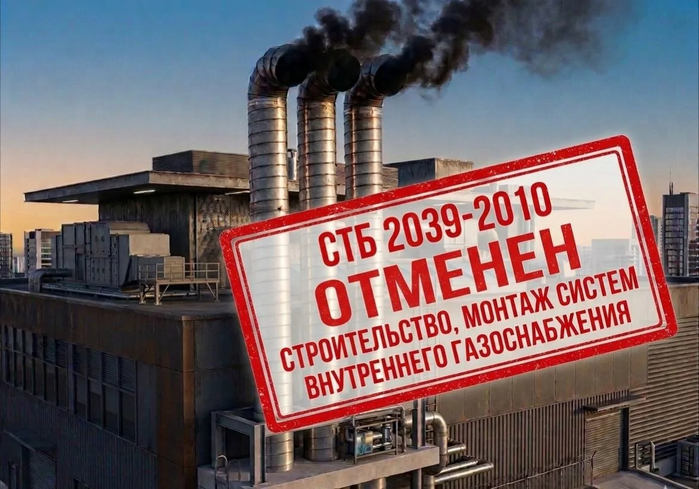

Отменен СТБ 2039-2010: введены новые строительные правила СП 4.03.03-2026
С 25 апреля 2026 года в Республике Беларусь введены в действие новые строительные правила СП 4.03.03-2026 «Системы внутреннего газоснабжения зданий и сооружений. Контроль качества работ». Документ введен впервые взамен СТБ 2039-2010 и СТБ 2020-2009 (раздел 9).
СТБ 2039-2010 более не является действующим нормативным документом для выполнения работ и контроля качества в области монтажа систем внутреннего газоснабжения.

Что изменилось
Новый СП 4.03.03-2026 существенно перерабатывает требования к:
- контролю качества монтажа внутренних газопроводов;
- входному, операционному и приемочному контролю;
- оформлению исполнительной документации;
- испытаниям на прочность и герметичность;
- монтажу дымовых труб;
- требованиям к методам контроля и средствам измерений;
- формам актов, журналов и протоколов контроля.
Документ также актуализирует ссылки на действующие ТНПА, ГОСТ, СТБ и строительные правила. В новом СП расширен перечень приложений и форм исполнительной документации по сравнению со СТБ 2039-2010.
Почему это важно для аккредитованных лабораторий
Если в области аккредитации испытательной лаборатории, до сих пор указан СТБ 2039-2010, возникает риск использования недействующего нормативного документа.
На практике это может привести к:
- несоответствиям при оценке компетентности;
- необходимости актуализации области аккредитации;
- корректировке внутренних документов ;
Особенно это касается лабораторий, выполняющих:
- контроль качества газопроводов;
- испытания на герметичность и прочность;
- контроль дымовых труб;
- неразрушающий контроль сварных соединений;
- инспекционный контроль объектов газоснабжения.
Что необходимо сделать лабораториям
После введения СП 4.03.03-2026 рекомендуется:
- Провести анализ действующей области аккредитации.
- Проверить наличие ссылок на СТБ 2039-2010.
- Актуализировать внутренние процедуры и формы.
- Оценить необходимость расширения или изменения области аккредитации.
- Обновить перечни ТНПА, методик и записей.
- Подготовить персонал к работе по новым требованиям.
Чем можем помочь
Наша команда оказывает сопровождение по:
- актуализации области аккредитации;
- переходу со СТБ 2039-2010 на СП 4.03.03-2026;
- анализу рисков применения отмененных ТНПА;
- подготовке документов для органа по аккредитации;
- корректировке процедур, форм и записей;
- подготовке лабораторий к оценке компетентности;
- аккредитации и расширению области аккредитации по новым требованиям.
Также помогаем определить, какие изменения действительно необходимы, а какие лаборатории вносят избыточно — это важный момент, потому что многие организации сейчас начинают механически переписывать документы без анализа применимости требований. Это типичная ошибка при переходе на новые ТНПА.
Если в вашей области аккредитации указан СТБ 2039-2010 — рекомендуем провести проверку актуальности документов заранее, а не в момент оценки компетентности.
Провести подготовку к актуализации области аккредитации